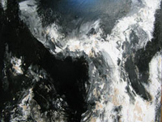
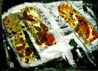
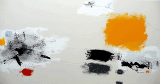
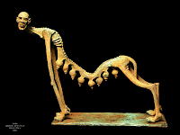

con Salomon Arts Gallery
Del 30 de noviembre al 4 de diciembre de 2016
Enriqueta Hueso • Kenryo Hara • Pilar Palomares
en colaboración con la Galería O+O - Valencia

Five fold EVA and the Big Apple
Exposición en Salomon Art Gallery de New York
Del 27 de marzo al 20 de abril de 2013
La Galería O+O forma parte de la exposición “Artistas del Mediterráneo”, que tendrá lugar del 23 de marzo al 5 de abril de 2012 en la Embajada de Egipto en Roma.
| VER VIDEO |
"TEMPUX FUSIT: DE PASO"
Inauguración: 18 de mayo de 2012
| VER VIDEO |
IV FESTIVAL INTERNACIONAL DE VIDEOARTE
CAMAGÜEY, CUBA
La Galeria O+O ha enviado los proyectos de los videoartistas, Domingo Sarrey - Sergio Belinchón - Antonio Ortuño y Jonathan Bellés siendo seleccionados para este festival.
El videoartista Jonathan Bellés, presentado por la Galeria O+O en el festival de video de Cuba, ha ganado el Premio Crea 2011
FELLINI GALLERY
SHANGHAI
exposición 10 de mayo de 2010
Galería Artitude de París en colaboración con la galeria Fellini

{kind=link}
{kind=link}
{kind=link}
{kind=link}
{kind=link}
{kind=link}
{kind=link}
Queridos amigos, en China todo es posible, pero todo es complejo, es necesario adaptar... Finalmente, nuestra exposición llevará a cabo en la Galería de FELLINI. 339 Changle Lu # 15 que con sus 600 m2 en 3 plantas está disponible del 10 al 16 de mayo. El vernissage se celebrará el lunes, 10 de mayo a las 16:30 con la efectiva presencia del Señor Thierry Mathou Cónsul General de Francia en Shanghai. Al día siguiente tendremos la apertura de arte-SHANGHAI 2010. Galeria Fellini
 |
| Faba |
 |
| Enriqueta Hueso |
{kind=link}
 |
| Enriqueta Hueso |
{kind=link}
 |
| Miquel San Román |
{kind=link}
 |
| Mónica Cerrada |
 |
| Julián Ortiz |
{kind=link}


{kind=link}
{kind=link}

{kind=link}
contaminazioni culturali - mostra collettiva itinerante
Galleria Metamorfosi, Reggio Emilia - galleria Calma, Perugia - Festival Luna d'estate, Torgiano - Museo Storico della Fanteria, Roma
La Galleria Tartaglia Arte e VISTA CentrodArte e Comunicazione, in collaborazione con O+O Oriente & OccidenteGestiòn Cultural (Valencia) e Associazione Centro D'arte Minerva,con il patrocinio del Comune di Cortona, presentano una mostra collettiva itinerante.
{kind=link}

{kind=link}

{kind=link}
| NOTICIA PRENSA |
{kind=link}
{kind=link}